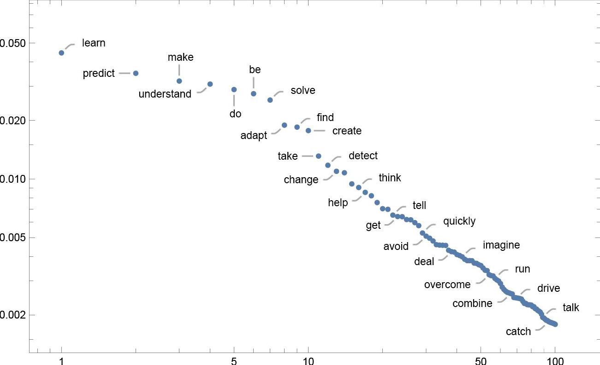
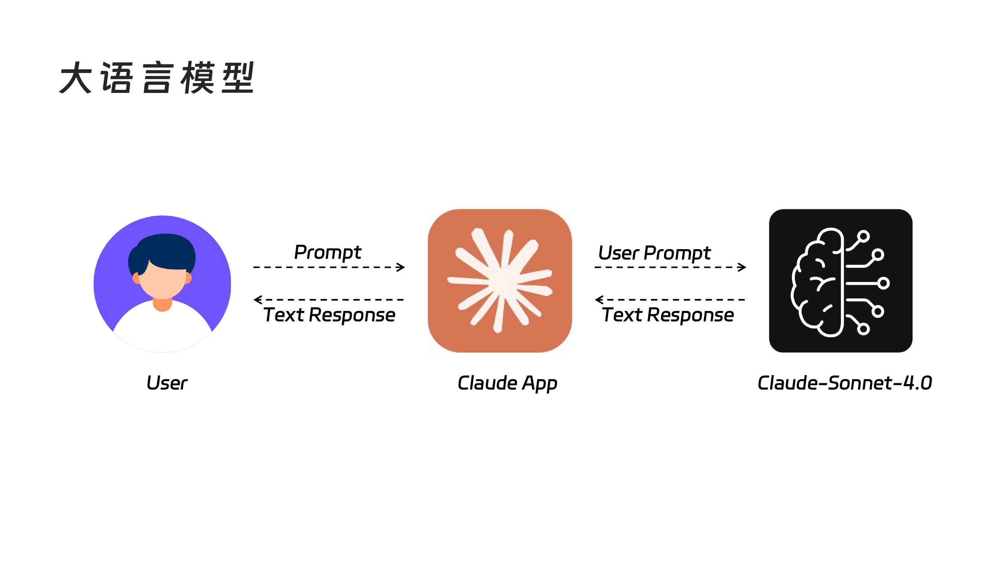
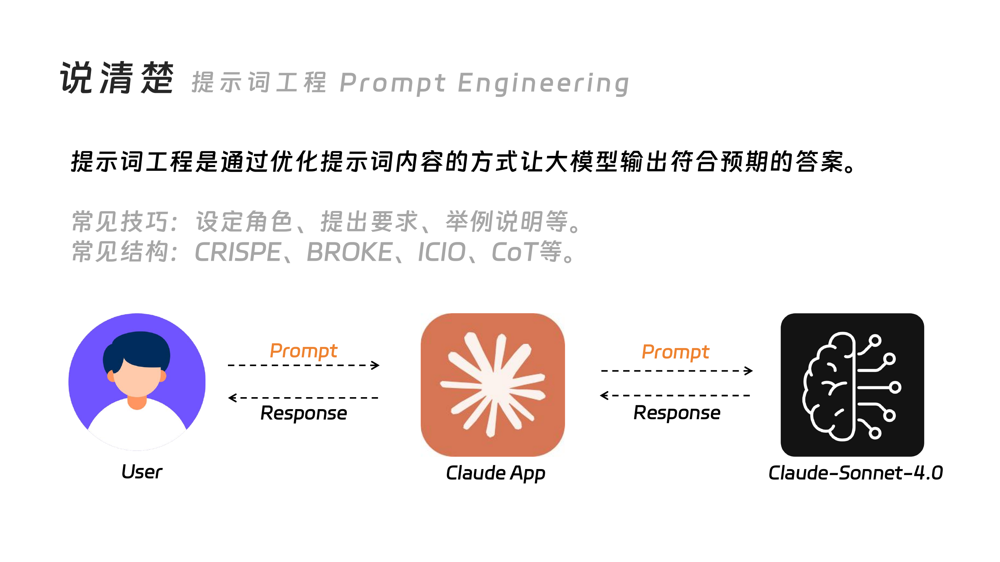
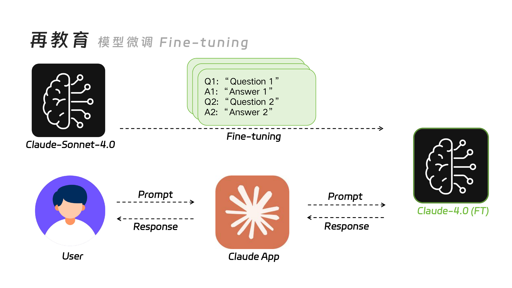
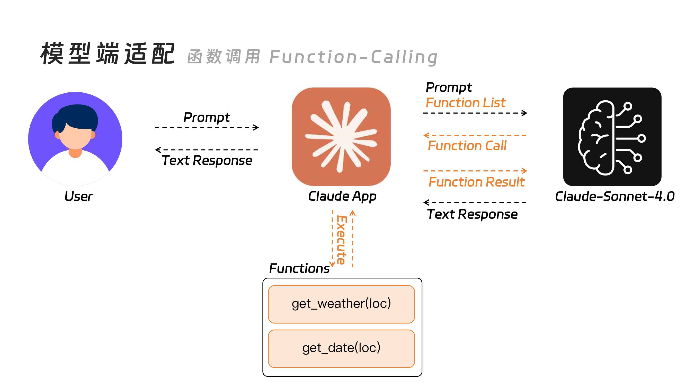
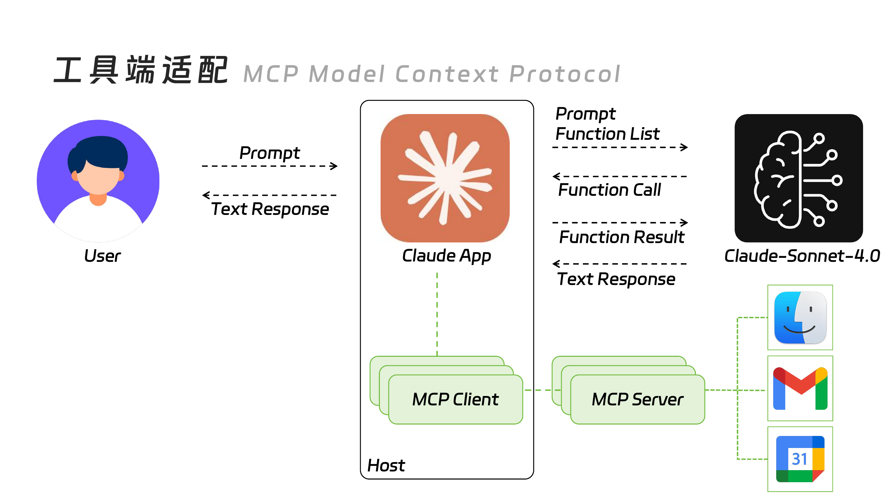
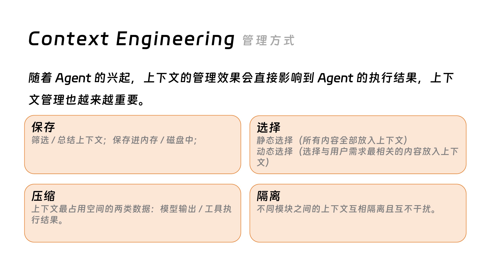
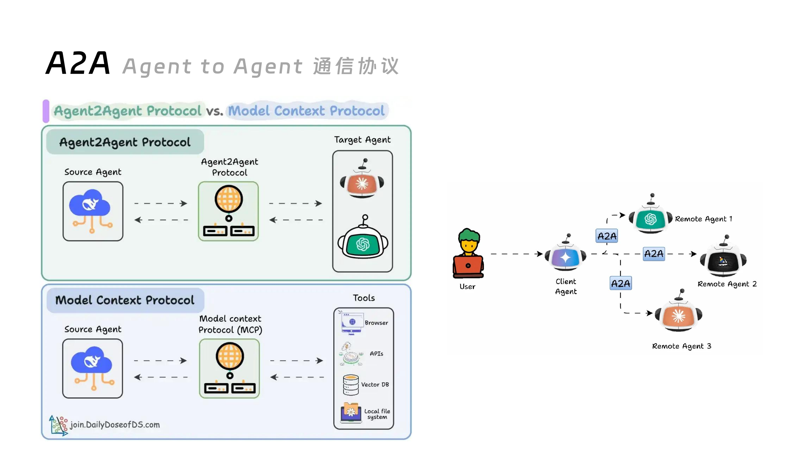

最近在网上冲浪的时候看到大家在说各种 AI 名词什么 Agent、MCP、Context Engineering、A2A 听的头都大了，而且每个人对一个名词的解释都有点模棱两可，所以这几周完整的学习和梳理了一下，写了这篇文章，希望通过这篇文章总结一下我最近的发现。
在这篇文章里会依次介绍大语言模型、提示词工程、RAG、微调、Function Calling、MCP 等最近大家常常提到的 AI 名词，并且为大家梳理一个基础框架，方便之后继续跟进和学习 AI 的相关内容。
大语言模型（LLM）
大语言模型这词在过去两年里有两次破圈，第一次是 2022 年12 月 OpenAI 推出 ChatGPT 3.5，第二次是 2025 年年初 DeepSeek-R1 横空出世。大部分人是从这两次破圈中意识到原来有一个名叫大语言模型的东西可以“口吐人言”。
而我们通常使用它的方式也是通过浏览器或者桌面应用的聊天框和大模型发送对话来进行交互。

这边简单提一嘴大语言模型的原理，大语言模型实际上是在计算概率来生成文本，当你输入 “The best thing about AI is its ability to”（关于 AI 最厉害的能力是），大语言模型会基于训练它时使用的语料，来计算那个词和你输入的话最相关。例如：出现 “learn”（学习）的概率是 4.5 %、“predict”（预测）的概率是 3.5% 等，而每输出一个新的词时又会使用之前输出词和用户的输入合并再进行类似的概率计算。然后为了保持输出的创意性，并不会直接输出概率最高的词，而是从最相关的几个词里随机选择一个进行输出。


通过它的原理以及我们自己日常和 AI 沟通的过程中的经验也能意识到 LLM 还是有许多局限性存在的。首先，大语言模型是根据过去某一个时刻的知识训练而成的，会有一个知识截止日期，在这个日期之后的知识大语言模型自己是不知道的；其次，大语言模型存在幻觉可能会出现“一本正经地胡说八道”的情况；另外，对于特别专业或细分的领域，通用的大语言模型知识深度可能不够充分，难以给出专家级的见解；最后，大语言模型只能进行文本的输入和输出，它无法直接调用外部工具。

为了解决上述大语言模型的局限性问题，行业前沿的专家钻研出许多技术手段。接下里就会对这些技术手段进行一一介绍。
不过，为了更好的理解接下来的内容我们需要简单了解一下我们和大模型的交互流程，其实我们是通过大模型服务商提供的网页（你要打开 https://chatgpt.com/ 这个网页才可以和 ChatGPT 聊天）或者桌面应用（例如 Claude 桌面应用）才可以和大语言模型沟通，我们暂且叫这个介于用户和大模型之间的网页或应用叫代理程序。

整个流程是：
-
你在网页上输入你想说的话（提示词）。
-
由网页将你说的话通过网络发送给服务器上的大语言模型。
-
大语言模型生成文本来回应你说的话，并将其返回给网页。
-
网页上跳出一个个字，显示大语言模型的回应。
有了以上简单的认知我们开始接下来的内容吧。
解决文本生成的问题
为了解决前面说到的知识截止日期、幻觉、专业领域知识不足的问题，业内公认的解决方案有三种：提示词工程、检索增强生成、大模型微调。
说清楚——提示词工程
提示词工程就是通过优化提示词内容的方式让大语言模型输出符合我们预期的答案**。其中可能会涉及到提示词编写技巧和基础结构。可以在一定程度上优化幻觉**、领域知识不足的问题。

查数据——检索增强生成
**检索增强生成（RAG，Retrieval-Augmented Generation）**是通过检索外部知识库中的最新、最相关信息来补充给大语言模型，从而在生成回答时提高准确性、相关性和上下文的准确性，并减少模型生成幻觉（虚假信息）的几率。

流程如下：
-
用户发起提问。
-
代理程序搜索外部知识库找到与问题最相关的数据。
-
将用户提示和相关数据发送给大语言模型。
-
大语言模型结合提问和相关数据回答提问。
-
代理程序向用户返回最终答案。
再教育——大模型微调
微调（Fine-tuning）是在基础大模型之上使用较小的专门数据集上对其进行重新训练，以使其适应特定任务的过程 。这是一个对大模型进行再教育的方式，它允许开发人员利用现有模型的一般知识，同时针对独特的问题定制回答。

流程如下：
-
准备好数据集（其中包括多组问题和答案文本）。
-
使用微调技术对大模型进行微调，获取到微调后的模型。
-
用户发送问题。
-
如果问题与用于微调训练的数据集有关，则会以其特定风格和回答进行回复。
提示词工程 vs 检索增强生成 vs 微调
提示词工程是解决行动成本最低的方案，对大模型的所有需求都可以从提示词工程开始，如果经过一定程度的调试后，发现无法解决问题，再考虑使用 RAG 和大模型微调。
而 Fine-tuning 使用较小的数据集对大模型进行微调的方式让大模型更有效的执行特定领域的任务（明确大语言模型应该如何行动），能够解决诸如文风、格式、逻辑、专业词汇等细微且隐性的问题。
其中 RAG 通过提供外部知识库的方式确保大模型了解某个领域的专业知识或最新信息（明确大语言模型应该知道什么），能够很好的解决知识截止时间、幻觉、专业领域知识不足的问题。

如果把大语言模型比做人类客服来说：
-
微调（Fine-tuning）：就像公司对这位客服进行为期数月的深度内训。通过学习的内部资料和对话记录，他不仅掌握了知识，还内化了公司的行话、语气和处理流程，因此能够自信、流畅地用公司特有的风格与客户沟通。
-
RAG（检索增强生成）：则像是在这位客服的桌子上放了一台联网的、随时可查阅的电脑，里面存储着公司最新的、最全面的所有信息。当客户提问时，他能迅速在电脑中检索相关文档，并结合这些最新信息给出准确、及时的回答。他不需要记住所有细节，只需要知道如何高效地查找和利用信息。
不过上述的技术并不是非此即彼的关系，挺多情况下会同时运用以上三种技术来解决问题。
解决工具调用的问题
大语言模型本身只是一个文本生成器，它无法执行订票、发邮件、查天气等现实世界的操作。为了解决大语言模型无法调用外部工具的问题，业界提出了不同的解决方案。其中，ChatGPT 的母公司 OpenAI 提供了 Function-Calling 来解决模型端的适配； Claude 的母公司 Anthropic 则提出了 MCP 来解决工具端的适配。
模型端适配——Function-Calling
Function-Calling（函数调用）是 OpenAI 等大模型提供商推出的一项功能，它允许开发者在与大模型交互时，向模型描述可用的外部工具（函数）。当用户提出一个需要使用这些工具才能完成的请求时，模型不会直接回答，而是会生成一个包含结构化数据（JSON 格式）的对象，告诉你的应用程序应该调用哪个函数以及需要传入什么参数。

流程如下：
-
开发者定义工具：开发者在代码中定义一组可用的工具，比如
get_weather(location)（获取当前天气）或get_date(location)（获取当前时间）发送给大语言模型。 -
用户提出请求：用户输入一个指令，例如“帮我查一下新加坡今天的天气怎么样？”。
-
模型识别意图并生成调用指令：大模型理解用户的意图，并判断需要调用
get_weather函数。于是，它不会直接生成文本答案，而是输出一个 JSON 对象，类似：{"function_name": "get_weather", "arguments": {"location": "Singapore"}}。 -
代理程序执行工具：我们之前提到的代理程序接收到这个 JSON 对象后，解析它，并实际执行本地的
get_weather("Singapore")函数。这个函数会去调用一个真实的天气 API。 -
将结果返回给模型：代理程序将执行函数后得到的结果（例如，“新加坡今天晴，32摄氏度”）再次发送给大语言模型。
-
模型生成最终答复：大模型收到工具返回的结果后，会用自然语言组织并回复用户：“新加坡今天的天气是晴天，气温为32摄氏度。”
Function-Calling 是一种模型驱动的方案，核心在于模型足够“聪明”，能够理解何时以及如何使用开发者提供的工具。
工具端适配——MCP（Model Context Protocol）
MCP（Model Context Protocol，模型上下文协议） 是由 Anthropic 提出的一种开放标准，旨在让外部工具或服务能够主动地、标准化地向 AI 系统描述自己的能力。它的目标是创建一个生态，让任何工具都能“自报家门”，而 AI 系统则能轻松地发现和使用它们。
如果说 Function-Calling 是 AI 模型在问“你（开发者）有什么工具可以给我用？”，那么 MCP 则是工具在主动说“嘿，AI，我能做这些事，你可以用我！”。

流程如下：
-
工具提供清单：每个遵循 MCP 的工具都会提供一个标准的“清单”文件（manifest file），用标准格式描述自己的功能、如何调用、需要什么权限等。
-
AI 系统发现并注册工具：AI 系统（比如一个聊天应用）可以发现这些工具的清单，并将其注册到自己的可用工具库中。
-
用户提出请求：用户提出请求，例如“帮我订一张明天去上海的机票”。
-
AI 系统提供上下文：AI 系统将用户的请求连同已注册的订票工具的“清单”信息一起，作为上下文提供给大语言模型。
-
模型决策并执行：大模型根据上下文，决定使用订票工具，并生成调用指令。代理程序随后执行该工具。
MCP 是一种工具驱动的方案，它的愿景是创建一个像“App Store”一样的工具生态，让 AI 可以即插即用各种第三方能力，而不需要每个开发者都去为特定的模型做适配。
Agent 的兴起
当我们把 RAG、微调、Function-Calling、MCP 这些技术组合在一起，赋予大语言模型记忆、规划和使用工具的能力时，一个更高级的概念就诞生了——AI Agent（人工智能代理）。
Agent 不再仅仅是一个问答机器人，它更像一个能够自主理解、规划、执行并完成复杂任务的智能实体。
Agent 的能力
一个典型的 AI Agent 通常具备以下几个核心能力：
-
大脑（Brain）：核心是强大的大语言模型，负责推理、理解和决策。
-
规划（Planning）：能将一个复杂的大任务（如“帮我策划一次为期五天的东京旅行”）分解成一系列可执行的子任务（查询航班、预订酒店、规划每日行程等）。
-
记忆（Memory）：拥有短期和长期记忆。短期记忆用于记住当前的对话上下文，长期记忆则通过外部数据库（如向量数据库）来存储关键信息和过往经验。
-
工具使用（Tool Use）：通过 Function-Calling 或 MCP 等机制，能够调用外部 API 或工具来执行无法通过语言模型自身完成的任务（如搜索、计算、代码执行等）。
如何编排 Agent？
编排（Orchestration） 就是设计和管理 Agent 工作流程的过程。就像电影导演需要安排每个场景、演员和道具一样，开发者需要编排 Agent 的各个组件（LLM、记忆、工具），让它们协同工作以完成最终目标。
目前，业界已经有许多成熟的框架来帮助开发者进行 Agent 编排，最著名的就是 LangChain 和 LlamaIndex。这些框架提供了一系列标准化的接口和组件，让开发者可以像“搭积木”一样，快速构建出强大的 Agent。
在众多编排模式中，有两种基础且经典的 Agent 架构值得了解：ReAct 和 Plan-and-Execute。

ReAct (Reason and Act)：这是一种将推理和行动紧密结合的框架。Agent 在这个模式下会进行“思考-行动-观察”的循环。
-
思考 (Thought)：Agent 首先会基于当前任务和已有信息进行推理，思考下一步应该做什么。
-
行动 (Action)：根据思考结果，决定调用哪个工具，以及使用什么参数。
-
观察 (Observation)：执行工具后，Agent 会观察返回的结果，并将这个新信息作为下一步“思考”的输入。 这个循环会一直持续，直到任务完成。ReAct 模式非常灵活，适合处理那些需要根据实时反馈不断调整策略的动态任务。

**Plan-and-Execute (计划并执行)：这是一种将思考过程（规划）与行动（执行）**明确分开的架构。它通过一个结构化的方法来处理复杂任务。
-
**规划阶段 (Planning Phase)：**一个 Planner 模型会首先分析用户的请求，并将其分解成一个详细的、分步骤的计划。这个初始计划作为实现最终目标的蓝图。
-
**执行阶段 (Execution Phase)：**一个 Executor Agent 会接收这个计划，并按顺序执行每一步。在执行过程中，Agent 会使用可用的工具来完成具体操作。
-
**适应与重新规划 (Adaptation and Re-planning)：**在完成一个步骤后，Replan 模型会评估结果。如果情况发生变化或初始计划不再有效，Replan 模型可以动态地调整、修改当前计划，甚至创建一个全新的计划，以确保任务成功完成。这种动态适应性使其非常灵活和强大。
Context Engineering（上下文工程）
上下文工程是构建高质量 Agent 的核心技术之一。它指的是设计、管理和优化提供给大语言模型的所有信息（即上下文）的过程，以确保模型能够做出最准确、最相关的决策。

上下文不仅包括用户的原始提示词，还可能包括：
-
对话历史：让 Agent 记住之前的交流内容。
-
RAG 检索结果：从外部知识库中提取的最新信息。
-
工具的输出：调用 API 后返回的数据。
-
Agent 的“内心独白”：Agent 的思考链（Chain-of-Thought），即它为了得出结论所做的推理步骤。
-
示例（Examples）：提供一些高质量的问答范例，引导模型输出特定格式或风格的答案。
一个优秀的上下文工程师就像一位出色的“投喂员”，总能精确地在恰当的时机，将最有用的信息喂给大语言模型这个“大脑”，从而引导 Agent 高效地完成任务。

为了高效地利用有限的上下文窗口并向模型提供最相关的信息，上下文工程通常涉及以下几种管理策略：
-
保存 (Saving)：为了让 Agent 拥有记忆，上下文需要被持久化保存。短期记忆可以直接保存在对话历史中，而长期记忆和知识则通常存储在外部系统中，如向量数据库，以便未来可以快速检索。
-
选择 (Selection)：在每次与模型交互时，我们不可能把所有历史信息都塞进上下文。因此，需要有策略地选择最相关的信息。这通常通过 RAG 技术实现，即根据当前用户的查询，从数据库中检索出最相关的“记忆片段”或文档。
-
压缩 (Compression)：当上下文信息过长时，就需要对其进行压缩以适应模型的输入限制。常见的方法包括：对早期的对话进行总结、移除不重要的细节、或者使用更高级的算法来提炼核心信息。
-
隔离 (Isolation)：在多用户或多任务场景下，必须对上下文进行隔离，确保一个 Agent 的知识和对话历史不会泄露给另一个不相关的任务或用户，避免信息混淆和隐私问题。
A2A：Agent 间的通信方式
A2A（Agent-to-Agent）协议是一种开放的通信标准，它允许来自不同提供商和平台的独立 AI Agent 相互发现、沟通和协作。这是 AI 系统发展的一个关键演进，旨在打破由不同公司开发的 AI Agent 之间的“孤岛”，使它们能够无缝地协同工作，处理单个 Agent 难以应对的复杂工作流。

A2A 工作流示例：规划一次旅行
一个使用 A2A 的多 Agent 系统可以协调不同领域的专家 Agent 来完成一个复杂任务，例如规划一次旅行：
-
用户请求：用户向一个面向客户的“礼宾 Agent”提出请求：“帮我计划一个为期一周的海滩假期”。
-
任务委托：作为 A2A 客户端的礼宾 Agent，通过查阅 Agent 名片来发现并确定分别负责航班、酒店和本地活动的专家 Agent。
-
跨 Agent 通信：
-
礼宾 Agent 将航班预订任务委托给航空公司的 Agent。
-
将酒店预订任务委托给酒店预订 Agent。
-
将本地活动规划任务委托给本地向导 Agent。
-
-
后端操作：每个专家 Agent 使用自己的工具执行任务，可能会利用像 MCP 这样的内部协议来访问航班数据、酒店库存或本地评论的 API。
-
状态与完成：当每个子任务完成时，专家 Agent 会向礼宾 Agent 提供更新和结果（“交付物”）。
-
最终结果：礼宾 Agent 汇总所有协作 Agent 的信息，并向用户呈现一份完整的、协商好的假期行程。
核心名词表
| 名词 | 解释 |
|---|---|
| LLM | 大语言模型，通过计算概率来生成文本的AI模型。 |
| 提示词工程 | 优化输入给模型的指令，以获得更理想输出的技术。 |
| RAG | 检索增强生成，通过外部知识库为模型提供最新信息以增强回答。 |
| 微调 | 使用特定数据集对大模型进行再训练，使其适应特定任务或风格。 |
| Function Calling | 模型驱动的工具调用方法，模型生成调用指令，由外部程序执行。 |
| MCP | 工具驱动的工具调用协议，工具主动向模型“宣告”自己的能力。 |
| AI Agent | 集成了规划、记忆和工具使用能力的智能实体，能自主完成复杂任务。 |
| ReAct | 一种 Agent 架构，通过“思考-行动-观察”的循环来动态完成任务。 |
| Plan-and-Execute | 一种 Agent 架构，先制定完整计划，然后按部就班地执行。 |
| 上下文工程 | 设计、管理和优化提供给模型的所有信息（上下文）的过程。 |
| A2A | Agent间的开放通信协议，旨在打破平台壁垒，实现多 Agent 协作。 |
如果您喜欢此博客或觉得它对您有用，则欢迎对此发表评论。 也欢迎您分享此博客，以便更多人可以参与。 如果博客中使用的图像侵犯了您的版权，请与我联系以将其删除。 谢谢 ！